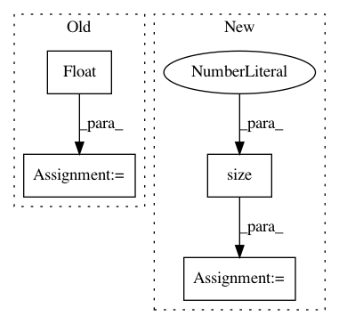

e60669c5aa467d5c11a508c01b37c4ed8e352fa6,torch_geometric/nn/conv/supergat_conv.py,SuperGATConv,forward,#SuperGATConv#Any#Any#Any#Any#,159
Before Change
// X, Y for the self-supervised task
self.att_with_neg_edges = att_with_neg_edges
num_neg_edges = att_with_neg_edges.size(0)
att_label = torch.zeros(num_neg_edges).float().to(x.device)
att_label[:pos_edge_index.size(1)] = 1.
self.att_label = att_label
if self.concat is True:
After Change
edge_index_i=neg_edge_index[1],
x_i=x[neg_edge_index[1]],
x_j=x[neg_edge_index[0]],
num_nodes=x.size(0),
return_logits=True,
)
self.att_x = torch.cat([pos_att, neg_att], dim=0)
self.att_y = self.att_x.new_zeros(self.att_x.size(0))
self.att_y[:pos_edge_index.size(1)] = 1.
if self.concat is True:
In pattern: SUPERPATTERN
Frequency: 3
Non-data size: 4
Instances
Project Name: rusty1s/pytorch_geometric
Commit Name: e60669c5aa467d5c11a508c01b37c4ed8e352fa6
Time: 2021-02-15
Author: matthias.fey@tu-dortmund.de
File Name: torch_geometric/nn/conv/supergat_conv.py
Class Name: SuperGATConv
Method Name: forward
Project Name: allenai/allennlp
Commit Name: 2dd335e4faad78a04c1028e6f048b65143399c40
Time: 2020-08-25
Author: ohadr@mail.tau.ac.il
File Name: allennlp/nn/util.py
Class Name:
Method Name: batched_span_select
Project Name: ncullen93/torchsample
Commit Name: 943753c968fe7c0cbafc6e44d60f1b28b42e997b
Time: 2017-05-03
Author: ncullen.th@dartmouth.edu
File Name: torchsample/utils.py
Class Name:
Method Name: th_nearest_interp2d